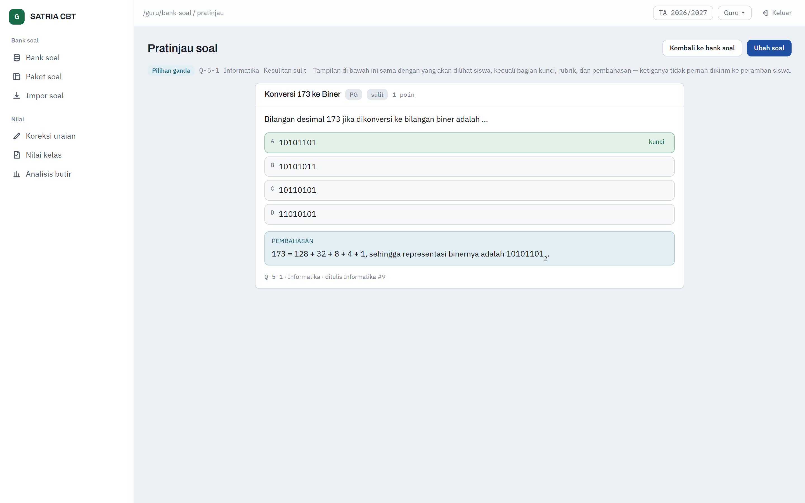

3. Menulis soal
Sepuluh jenis soal, satu tab per jenis, dan bentuk kunci masing-masing.
Builder soal adalah satu-satunya tempat Anda menulis butir. Bentuk formulirnya berubah mengikuti jenis soal yang dipilih, karena kunci jawaban setiap jenis memang berbeda bentuknya.

Sepuluh jenis soal
- Pilihan ganda — satu jawaban benar di antara beberapa pilihan.
- Jawaban ganda — lebih dari satu pilihan benar.
- Benar/salah — satu pernyataan, dua kemungkinan.
- Isian singkat — jawaban berupa teks pendek, dinilai dari daftar varian.
- Isian rumpang — kalimat berlubang, tiap lubang punya varian jawabannya sendiri.
- Menjodohkan — memasangkan dua kumpulan.
- Mengurutkan — menyusun deret menjadi urutan yang benar.
- Angka — jawaban numerik, dengan toleransi.
- Uraian — jawaban bebas. Tidak dinilai otomatis.
- Media — stimulus berupa berkas; mekanisme jawabannya tetap salah satu dari yang di atas.
Teori singkat sebelum mulai
Yang perlu Anda pahami bukan tombol-tombolnya, melainkan satu perbedaan: soal yang dinilai mesin dan soal yang harus Anda nilai sendiri.
Hanya Uraian yang masuk kategori kedua. Kesembilan jenis lainnya dinilai otomatis, dengan syarat kuncinya bisa dicocokkan — karena itu isian singkat meminta daftar varian (bukan satu jawaban), dan angka meminta toleransi (bukan nilai tunggal).
Langkah menulis satu soal
-
Pilih jenis soal di tab atas. Bagian kunci jawaban di bawah menyesuaikan diri.
-
Tulis teks soal. Bilah di atasnya menyediakan tebal, miring, garis bawah, pangkat, subskrip, daftar, perataan, dan tabel.
-
Bila soal butuh gambar, audio, atau video, tekan Tambah gambar/berkas di bagian Gambar / berkas soal. Berkas ini tampil di atas teks soal, bukan di dalamnya.
-
Isi bagian kunci jawaban sesuai jenisnya.
-
Di bagian Detail soal, tetapkan judul singkat, tingkat, dan status.
-
Tekan Simpan ke bank.
Batas berkas
- Gambar — JPG, PNG, WEBP, GIF, maksimal 2 MB.
- Audio — maksimal 5 MB.
- Video — maksimal 20 MB.
Menyunting soal yang sudah ada

Memeriksa sebelum menyimpan
Laman Pratinjau menampilkan soal sebagaimana siswa melihatnya — tanpa kunci, tanpa pembahasan. Pakai itu untuk memastikan gambar termuat, tabel tampil rapi, dan pilihan jawabannya tidak terpotong.
